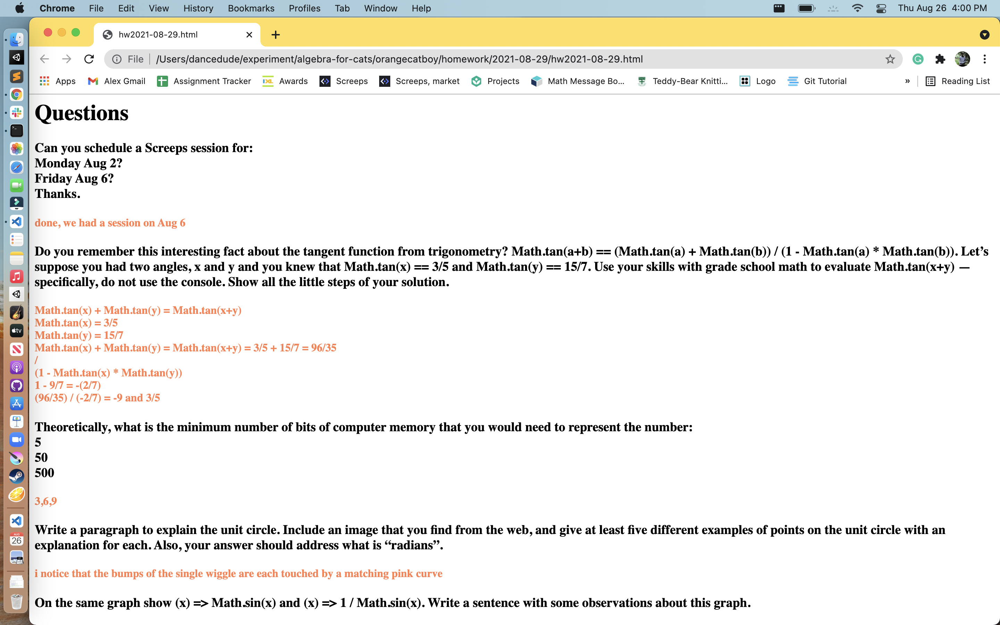
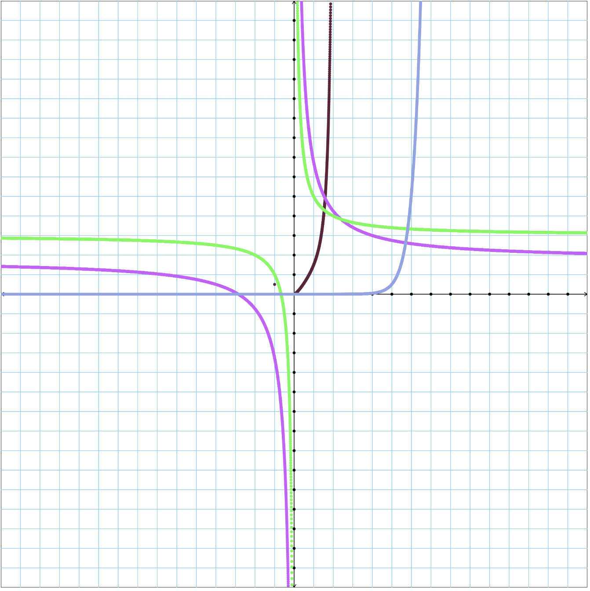
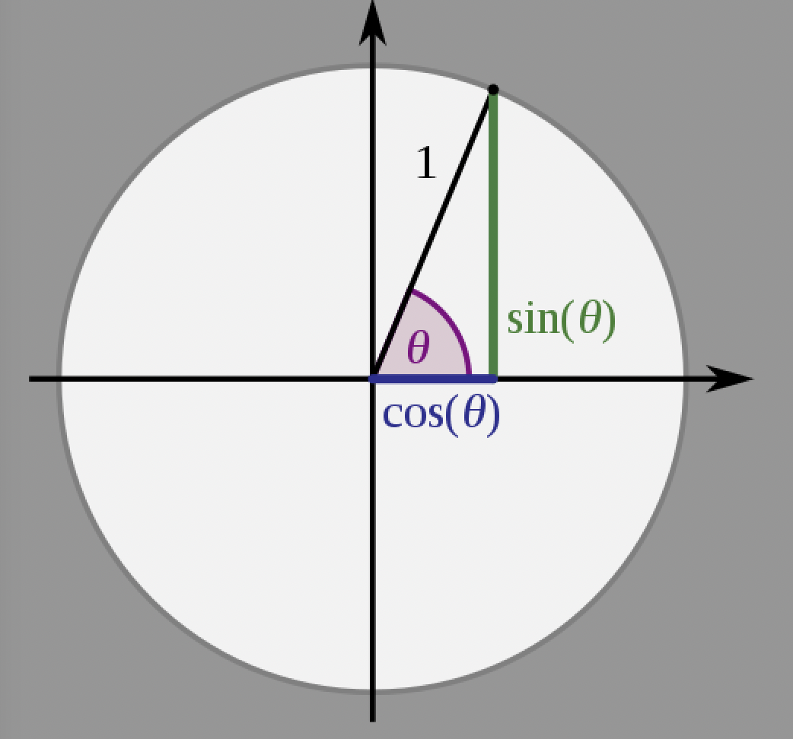

Questions
Explain the following git commands:
git init
git status
git add
git commit
git log
git push
git pull
For the homework that was due August 8, turn it into an html file with associated image files. Take a screenshot of the top part of that, use MacOS Preview to scale it to a width of 500, then put that screenshot here.

Create 5 crazy cool functions and put them all on the same graph. Include a code snippet showing what these functions are.

const func4 = (x) => 2/x+3;
const func2 = (x) => x**x**x*x+x/2;
const func3 = (x) => 2/2+3/x+2/x+3/4;
const func5 = (x) => Math.atan();
const func7 = (x) => x*x*7**(x-7);
Maybe you’ve seen this theorem before: Math.tan(a+b) == (Math.tan(a) + Math.tan(b)) / (1 - Math.tan(a) * Math.tan(b)). Let’s suppose you had two angles, x and y and you knew that Math.tan(x) == 3/7 and Math.tan(y) == 21/4. Use your skills with grade school math to evaluate Math.tan(x+y) — specifically, do not use the console. Show all the little steps of your solution.
Math.tan(x) + Math.tan(y) /(1 - Math.tan(x) * Math.tan(y)) = Math.tan(x+y)
Math.tan(x) = 3/7
Math.tan(y) = 21/4
Math.tan(x) + Math.tan(y) = Math.tan(x+y) = 3/7 + 21/4= 159/28
/
(1 - Math.tan(x) * Math.tan(y))
(1 - 3/7 * 21/4) = 1- 9/5 = -4/5
= -159/35
How do sin and cos relate to the unit circle? Incorporate the image at the top of this article into your answer and write a sentence or two to explain it.
